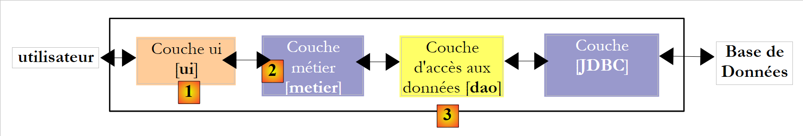
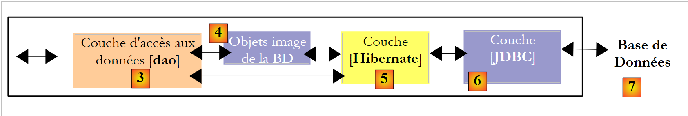
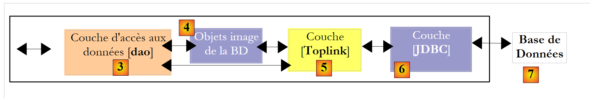

1. Introduzione
1.1. Obiettivi
Il PDF del documento è disponibile |QUI|.
Gli esempi contenuti nel documento sono disponibili |QUI|.
L'obiettivo è quello di esplorare i concetti principali della persistenza dei dati utilizzando l'API JPA (Java Persistence API). Dopo aver letto questo documento e aver provato gli esempi, il lettore dovrebbe aver acquisito le basi necessarie per poter poi procedere in autonomia.
L'API JPA è relativamente nuova. È disponibile solo a partire dalla versione JDK 1.5. Il livello JPA trova la sua collocazione in un'architettura multilivello. Consideriamo un'architettura a tre livelli piuttosto comune:
 |
- Il livello [1], qui indicato come [ui] (User Interface), è il livello che interagisce con l'utente tramite una GUI Swing, un'interfaccia console o un'interfaccia web. Il suo ruolo è quello di fornire i dati provenienti dall'utente al livello [2] o di presentare all'utente i dati forniti dal livello [2].
- Il livello [2], qui indicato come [business], è il livello che applica le cosiddette regole di business — ovvero la logica specifica dell'applicazione — senza preoccuparsi della provenienza dei dati che riceve o della destinazione dei risultati che produce.
- Il livello [3], qui indicato come [DAO] (Data Access Object), è il livello che fornisce al livello [2] i dati pre-memorizzati (file, database, ecc.) e memorizza alcuni dei risultati forniti dal livello [2].
- Il livello [JDBC] è il livello standard utilizzato in Java per accedere ai database. Questo è comunemente indicato come driver JDBC del DBMS.
Sono stati compiuti numerosi sforzi per facilitare agli sviluppatori la scrittura di questi diversi livelli. Tra questi, JPA mira a semplificare lo sviluppo del livello [DAO], che gestisce i cosiddetti dati persistenti, da cui il nome dell'API (Java Persistence API). Una soluzione che ha guadagnato terreno negli ultimi anni in questo campo è Hibernate:
 |
Il livello [Hibernate] si colloca tra il livello [DAO] scritto dallo sviluppatore e il livello [JDBC]. Hibernate è un ORM (Object-Relational Mapping), uno strumento che fa da ponte tra il mondo relazionale dei database e il mondo degli oggetti manipolati da Java. Lo sviluppatore del livello [DAO] non vede più il livello [JDBC] né le tabelle del database di cui desidera utilizzare il contenuto. Vede solo la rappresentazione a oggetti del database, fornita dal livello [Hibernate]. Il ponte tra le tabelle del database e gli oggetti manipolati dal livello [DAO] viene stabilito principalmente in due modi:
- tramite file di configurazione in stile XML
- tramite annotazioni Java nel codice, una tecnica disponibile solo a partire da JDK 1.5
Il livello [Hibernate] è un livello di astrazione progettato per essere il più trasparente possibile. L'obiettivo ideale è che lo sviluppatore del livello [DAO] non si renda assolutamente conto di lavorare con un database. Ciò è fattibile se non è lui a scrivere la configurazione che fa da ponte tra il mondo relazionale e quello degli oggetti. La configurazione di questo ponte è piuttosto delicata e richiede una certa esperienza.
Il livello [4] degli oggetti, che rispecchia il database, è chiamato "contesto di persistenza". Un livello [DAO] basato su Hibernate esegue operazioni di persistenza (CRUD: create, read, update, delete) sugli oggetti nel contesto di persistenza; queste operazioni vengono tradotte da Hibernate in istruzioni SQL. Per le operazioni di interrogazione del database (SQL SELECT), Hibernate fornisce agli sviluppatori un HQL (Hibernate Query Language) per interrogare il contesto di persistenza [4] piuttosto che il database stesso.
Hibernate è popolare ma complesso da padroneggiare. La curva di apprendimento, spesso presentata come facile, è in realtà piuttosto ripida. Non appena si dispone di un database con tabelle che presentano relazioni uno-a-molti o molti-a-molti, la configurazione del ponte relazionale-oggetto va oltre le capacità del principiante medio. Gli errori di configurazione possono quindi portare ad applicazioni con prestazioni scadenti.
Nel mondo commerciale, esisteva un prodotto equivalente a Hibernate chiamato Toplink:
 |
Alla luce del successo dei prodotti ORM, Sun, l'azienda che ha creato Java, ha deciso di standardizzare un livello ORM tramite una specifica denominata JPA, rilasciata insieme a Java 5. La specifica JPA è stata implementata sia da Toplink ( ) che da Hibernate. Toplink, che era un prodotto commerciale, è poi diventato open source. Con JPA, l'architettura precedente assume la seguente forma:
 |
Il livello [DAO] ora interagisce con la specifica JPA, un insieme di interfacce. Gli sviluppatori hanno tratto vantaggio da questa standardizzazione. In precedenza, se uno sviluppatore cambiava il proprio livello ORM, doveva modificare anche il proprio livello [DAO], che era stato scritto per interagire con un ORM specifico. Ora, scriverà un livello [DAO] che interagisce con un livello JPA. Indipendentemente dal prodotto che implementa il livello JPA, l'interfaccia presentata al livello [DAO] rimane la stessa.
Questo documento presenterà esempi di JPA in vari ambiti:
- In primo luogo, ci concentreremo sul ponte relazionale/oggetto che il livello ORM costruisce. Questo verrà creato utilizzando le annotazioni Java 5 per i database in cui troviamo relazioni tra tabelle del tipo:
- uno-a-uno
- uno-a-molti
- molti-a-molti
Per illustrare questo ambito, creeremo le seguenti architetture di test:
 |
I nostri programmi di test saranno applicazioni console che interrogano direttamente il livello JPA. In questo modo, esploreremo i principali metodi del livello JPA. Lavoreremo in un ambiente cosiddetto "Java SE" (Standard Edition). JPA funziona sia in ambienti Java SE che Java EE5 (Enterprise Edition).
- Una volta acquisita padronanza sia della configurazione del bridge relazionale/oggetto sia dell'uso dei metodi del livello JPA, torneremo a un'architettura multistrato più tradizionale:
 |
L'accesso al livello [JPA] avverrà tramite un'architettura a due livelli costituita dai livelli [business] e [DAO]. Per collegare questi livelli tra loro verrà utilizzato il framework Spring [7], seguito dal container JBoss EJB3.
Abbiamo menzionato in precedenza che JPA è disponibile sia in ambienti SE che EE5. L'ambiente Java EE5 fornisce numerosi servizi per l'accesso ai dati persistenti, tra cui pool di connessioni, gestori di transazioni e altro ancora. Per uno sviluppatore potrebbe essere vantaggioso sfruttare questi servizi. L'ambiente Java EE5 non è ancora ampiamente adottato (maggio 2007). Attualmente è disponibile su Sun Application Server 9.x (Glassfish). Un server delle applicazioni è essenzialmente un server di applicazioni web. Se si crea un'applicazione grafica autonoma utilizzando Swing, non è possibile utilizzare l'ambiente EE e i servizi che fornisce. Questo rappresenta un problema. Stiamo iniziando a vedere ambienti EE "autonomi", ovvero quelli che possono essere utilizzati al di fuori di un server delle applicazioni. È il caso di JBoss EJB3, che useremo in questo documento.
In un ambiente EE5, i livelli sono implementati da oggetti chiamati EJB (Enterprise Java Beans). Nelle versioni precedenti di EE, gli EJB (EJB 2.x) erano considerati difficili da implementare e testare e, a volte, presentavano prestazioni insufficienti. Si fa una distinzione tra i bean "entity" EJB 2.x e i bean "session" EJB 2.x. In breve, un "entity" EJB 2.x corrisponde a una riga di una tabella del database, mentre un "session" EJB 2.x è un oggetto utilizzato per implementare i livelli [business] e [DAO] di un'architettura multistrato. Una delle critiche principali mosse ai livelli implementati con gli EJB è che possono essere utilizzati solo all'interno di contenitori EJB, un servizio fornito dall'ambiente EE. Ciò rende problematico il test unitario. Pertanto, nel diagramma sopra riportato, il test unitario dei livelli [business] e [DAO] costruiti con gli EJB richiederebbe la configurazione di un server applicativo, un'operazione piuttosto complessa che non incoraggia realmente lo sviluppatore a eseguire test con frequenza.
Il framework Spring è stato creato in risposta alla complessità di EJB2. Spring fornisce, all'interno di un ambiente SE, un numero significativo di servizi tipicamente forniti dagli ambienti EE. Pertanto, nella sezione "Persistenza dei dati" che ci interessa in questa sede, Spring fornisce i pool di connessioni e i gestori di transazioni richiesti dalle applicazioni. L'emergere di Spring ha favorito una cultura dei test unitari, che sono diventati improvvisamente molto più facili da implementare. Spring consente l'implementazione di livelli applicativi utilizzando oggetti Java standard (POJO, Plain Old/Ordinary Java Objects), consentendone il riutilizzo in altri contesti. Infine, integra numerosi strumenti di terze parti in modo abbastanza trasparente, in particolare strumenti di persistenza come Hibernate, iBatis, ...
Java EE 5 è stato progettato per ovviare alle carenze della precedente specifica EE. EJB 2.x si è evoluto in EJB 3. Si tratta di POJO annotati con tag che li designano come oggetti speciali quando si trovano all'interno di un contenitore EJB 3. All'interno del contenitore, l'EJB3 può sfruttare i servizi del contenitore (pool di connessioni, gestore delle transazioni, ecc.). Al di fuori del contenitore EJB3, l'EJB3 diventa un oggetto Java standard. Le sue annotazioni EJB vengono ignorate.
Sopra, abbiamo illustrato Spring e JBoss EJB3 come una possibile infrastruttura (framework) per la nostra architettura multilivello. È questa infrastruttura che fornirà i servizi di cui abbiamo bisogno: un pool di connessioni e un gestore delle transazioni.
- Con Spring, i livelli saranno implementati utilizzando POJO. Questi accederanno ai servizi di Spring (pool di connessioni, gestore delle transazioni) tramite l'iniezione di dipendenze in questi POJO: durante la loro creazione, Spring inietta i riferimenti ai servizi di cui avranno bisogno.
-
JBoss EJB3 è un contenitore EJB in grado di funzionare al di fuori di un server applicativo. Il suo principio di funzionamento (dal punto di vista dello sviluppatore) è analogo a quello descritto per Spring. Troveremo poche differenze.
-
Concluderemo questo documento con un esempio di applicazione web a tre livelli, semplice ma rappresentativo:
 |
1.2. Riferimenti
[rif1]: Java Persistence with Hibernate, di Christian Bauer e Gavin King, edito da Manning.
[ref1] è il documento che è servito da base per quanto segue. Si tratta di un libro esaustivo di oltre 800 pagine sull'uso dell'ORM Hibernate in due contesti diversi: con o senza JPA. L'uso di Hibernate senza JPA è infatti ancora rilevante per gli sviluppatori che utilizzano JDK 1.4 o versioni precedenti, poiché JPA è apparso solo a partire da JDK 1.5.
Dopo aver letto più di tre quarti del libro e sfogliato il resto, mi ha colpito il fatto che tutto ciò che è contenuto in questo volume fosse utile. Un utente esperto di Hibernate dovrebbe avere familiarità con quasi tutte le informazioni fornite nelle 800 pagine. Christian Bauer e Gavin King sono stati esaustivi, ma raramente al punto da descrivere situazioni che non si verificheranno mai. Vale la pena leggerlo tutto. Il libro è scritto in uno stile didattico: c'è un sincero sforzo di non lasciare nulla nell'oscurità. Il fatto che sia stato scritto per l'utilizzo di Hibernate sia con che senza JPA rappresenta una sfida per chi è interessato solo a una o all'altra di queste tecnologie. Ad esempio, gli autori descrivono, utilizzando numerosi esempi, il ponte relazionale/oggetto in entrambi i contesti. I concetti utilizzati sono molto simili poiché JPA è stato fortemente ispirato da Hibernate. Ma ci sono alcune differenze. Tanto che qualcosa che è vero per Hibernate potrebbe non esserlo più per JPA, e questo finisce per creare confusione nel lettore.
Gli autori forniscono esempi di applicazioni a tre livelli nel contesto di un contenitore EJB3. Non trattano Spring. Vedremo in un esempio che Spring è, tuttavia, più semplice da usare e ha un ambito più ampio rispetto al contenitore JBoss EJB3 utilizzato in [rif. 1]. Ciononostante, "Java Persistence with Hibernate" è un libro eccellente che consiglio per tutte le nozioni fondamentali che insegna sugli ORM.
L'uso di un ORM è complesso per un principiante.
- Ci sono concetti da comprendere per configurare il ponte relazionale/oggetto.
- C'è il concetto di contesto di persistenza con le sue nozioni di oggetti in uno stato "persistito", "distaccato" o "nuovo"
- Ci sono i meccanismi che circondano la persistenza (transazioni, pool di connessioni), tipicamente servizi forniti da un contenitore
- Ci sono impostazioni relative alle prestazioni da configurare (cache di secondo livello)
- ...
Introdurremo questi concetti utilizzando degli esempi. Non approfondiremo la teoria che sta alla base di essi. Il nostro obiettivo è semplicemente, in ogni caso, consentire al lettore di comprendere l'esempio e interiorizzarlo al punto da poter apportare modifiche autonomamente o applicarlo in un contesto diverso.
1.3. Strumenti utilizzati
Gli esempi in questo documento utilizzano i seguenti strumenti. Alcuni sono descritti nelle appendici (download, installazione, configurazione, utilizzo). In tali casi, forniamo il numero del paragrafo e il numero di pagina.
- un JDK 1.6 (sezione 5.1)
- l'IDE di sviluppo Java Eclipse 3.2.2 (sezione 5.2)
- Plugin Eclipse WTP (Web Tools Package) (sezione 5.2.3)
- Plugin Eclipse SQL Explorer (sezione 5.2.6)
- il plugin Eclipse Hibernate Tools (sezione 5.2.5)
- Plugin Eclipse TestNG (sezione 5.2.4)
- Contenitore di servlet Tomcat 5.5.23 (sezione 5.3)
- DBMS Firebird 2.1 (sezione 5.4)
- DBMS MySQL 5 (Sezione 5.5)
- DBMS PostgreSQL (Sezione 5.6)
- DBMS Oracle 10g Express (Sezione 5.7)
- DBMS SQL Server 2005 Express (sezione 5.8)
- DBMS HSQLDB (Sezione 5.9)
- DBMS Apache Derby (Sezione 5.10)
- Spring 2.1 (Sezione 5.11)
- Contenitore JBoss EJB3 (Sezione 5.12)
1.4. Scaricare l'esempio e-
Sul sito web di questo documento, gli esempi trattati possono essere scaricati come file ZIP che, una volta estratto, crea la seguente cartella:
 |
- in [1]: la struttura delle directory degli esempi
- in [2]: la cartella <annexes> contiene gli elementi presentati nella sezione APPENDICI, paragrafo 5. In particolare, la cartella <jdbc> contiene i driver JDBC per i DBMS utilizzati negli esempi del tutorial.
- in [3]: la cartella <lib> raggruppa i vari archivi .jar utilizzati dal tutorial in 5 cartelle
- [4]: La cartella <lib/divers> contiene gli archivi: - driver JDBC per i DBMS - per lo strumento di test unitario [TestNG] - lo strumento di logging [log4j]
 |
- in [5]: gli archivi relativi all'implementazione JPA/Hibernate e agli strumenti di terze parti richiesti da Hibernate
- in [6]: gli archivi per l'implementazione JPA/TopLink
- in [7]: gli archivi di Spring 2.x e gli strumenti di terze parti richiesti da Spring
- in [8]: gli archivi del contenitore JBoss EJB3
 |
- in [9]: la cartella <hibernate> contiene esempi che utilizzano il livello di persistenza JPA/Hibernate
- in [10]: la cartella <hibernate/direct> contiene esempi in cui il livello JPA viene utilizzato direttamente con un programma di tipo [Main].
- in [11] e [12]: esempi in cui il livello JPA viene utilizzato tramite i livelli [business] e [DAO] in un'architettura multistrato, che rappresenta il caso d'uso standard. I servizi (pool di connessioni, gestore delle transazioni) utilizzati dai livelli [business] e [DAO] sono forniti da Spring [11] o da JBoss EJB3 [12].
 |
- In [13]: la cartella <toplink> include gli esempi della cartella <hibernate> [9], ma questa volta con un livello di persistenza JPA/Toplink invece che JPA/Hibernate. In [13] non è presente la cartella <jbossejb3> perché non è stato possibile ottenere un esempio funzionante in cui il livello di persistenza fosse fornito da Toplink e i servizi dal contenitore JBoss EJB3.
- In [14]: una cartella <web> contiene tre esempi di applicazioni web con un livello di persistenza JPA:
- [15]: un esempio che utilizza Spring / JPA / Hibernate
- [16]: lo stesso esempio con Spring / JPA / Toplink
- [17]: lo stesso esempio con JBoss EJB3 / JPA / Hibernate. Questo esempio non funziona, probabilmente a causa di un problema di configurazione irrisolto. È stato comunque incluso in modo che il lettore possa esaminarlo e possibilmente trovare una soluzione a questo problema.
Il tutorial fa spesso riferimento a questa struttura di directory, in particolare durante la verifica degli esempi trattati. Si invitano i lettori a scaricare questi esempi e a installarli. D'ora in poi, faremo riferimento alla struttura di directory sopra descritta come <examples>.
1.5. -Configurazione del progetto Eclipse per gli esempi
Gli esempi utilizzano librerie "user". Si tratta di archivi .jar raggruppati sotto un unico nome. Quando una libreria di questo tipo viene inclusa nel classpath di un progetto Java, tutti gli archivi in essa contenuti vengono inclusi in quel classpath. Vediamo come farlo in Eclipse:
 |
- in [1]: [Finestra / Preferenze / Java / Percorso di compilazione / Librerie utente]
- in [2]: creare una nuova libreria
- in [3]: assegnarle un nome e confermare
 |
- in [4]: selezionare i JAR che faranno parte della libreria [jpa-divers]
- in [5]: seleziona tutti i JAR dalla cartella <examples>/lib/divers
 |
- in [6]: la libreria utente [jpa-divers] è stata definita
- in [7]: ripetere la stessa procedura per creare altre 4 librerie:
Libreria | Cartella JAR della libreria |
<examples>/lib/hibernate | |
<esempi>/lib/toplink | |
<esempi>/lib/spring | |
<esempi>/lib/jbossejb3 |